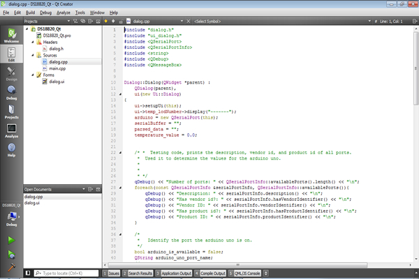
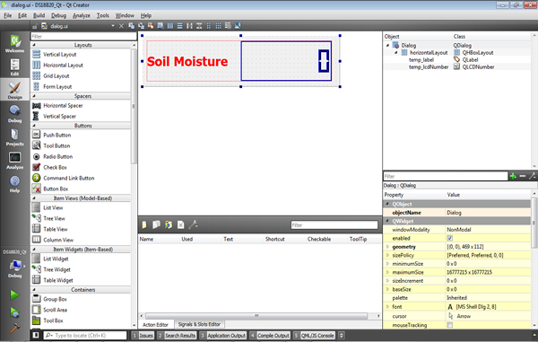
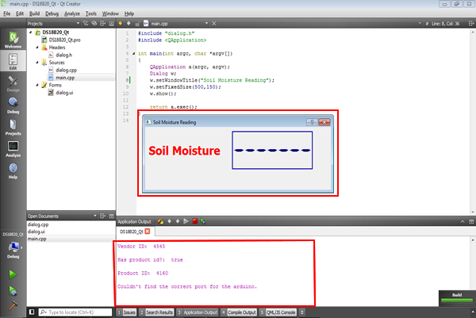
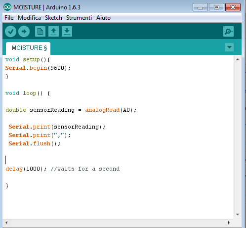
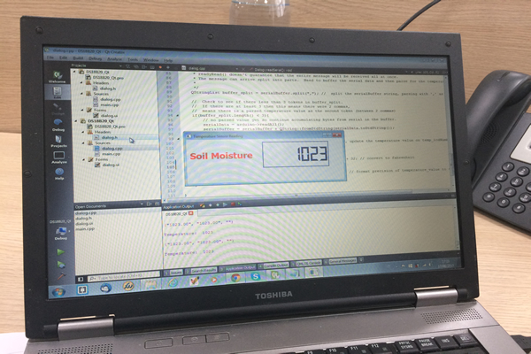
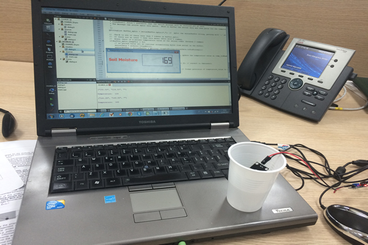

During this week we've learned about how to deal with applications that interface with input and/or output devices.br>
In fact, the assignment of this week is write an application that interfaces with an input &/or output device.
For this assignment, I decided to think about the final project and therefore I wanted to work on something that I can reuse for the final project.
I will use a soil moisture sensor in order to measure soil humidity. The sensor will be connected to the electronic board, and a computer interface will read input data and display it on the PC screen.

As for the graphical user interface, I used the QT visual design tool:

Step 2: ProgramingIn the programming I dealt with the following parts:
- Establishing and testing connection with external electronic board
- Reading data of input component attached to electronic board
- Parsing read data in order to get right values
- Display read values on GUI
Once I finished coding, and after several try&errors, I got the following error free code that I executed without connecting electronic board:

On the other hand, I had to program the soil moisture sensor in order to read soil humidity and send data to serial port. Here is the code for soil moisture sensor:

Executing and TestingAt this level, I loaded the sensor sketch on the board and I tested it in order to check if the sensor is working well. Everything was ok.
Then I executed the program I made in order to test if connection will be established with the board, and if it will read data from it. After some try&error, especially related to serial connection with the board, the program started working properly as follow.
First read of moisture sensor, it should return the highest value as it was dry:

Now the value has dropped as I put the sensor in a cup of water, here are the value:

The following is a short video of changing values as the sensor senses moisture:
The Program and sensor sketch files are available for downloand here: